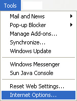

Free
computer Tutorials
|
Free
computer Tutorials
|
|
 home home |
Stay at Home and Learn | ||||
Control Panel Icons |
|||||
|
Internet Options - General
For this tutorial, you'll need the Internet Options dialogue box. To see how to bring it up, click this page (opens in a new windows): How to bring up the Internet Options Dialogue Box
There are quite a few changes you can make on the General Tab of the Internet Options dialogue box. First, you'll learn how to change your Home Page. But if your browser is really crawling along, or odd things are happening when surfing the internet, then you'll need to know how to Delete Temporary Internet Files, how to Clear Cookies, and how to make sure you get the latest version of a website. So bring up the Internet Options dialogue box (see the link above for how to do this), and we'll begin.
How to change your Home PageWhen a browser like Internet Explorer is first started up, its default behaviour is to go immediately to a web page. Which web page it tries to go to is the one on the General tab of the Internet Options dialogue box: The area highlighted in blue, under Home Page, is the internet site that you will be taken to when Internet Explorer first starts. In the image, we've set it to go to google.co.uk. If you don't want Internet Explorer to go to any web pages at all when
it starts up, click the button Use Blank. (This is useful if you're
creating web pages, and just want to test them out.) Clicking the Use
Blank button will change the text box to this: If you see this in the Home Page text box then you should be looking at a blank white page when Internet Explorer starts. However, there is a notorious browser hijacker called about.blank. If, when Internet Explorer starts, you see any pop up windows telling you about Spyware and how to remove it then you've probably been infected. (Please don't buy anything from these people!) If you are infected, then you may also notice a slow internet connection. Other symptoms are search areas with "Quick Web Search", "Search for ", or "Search The Web". What the creators of this Spyware are trying to do is to re-route all your internet searches through to their own paid listings, or serve you up lots of ads scaring you into buying something. You may also get an unwanted toolbar in Internet Explorer. To cure the problem, try this web site: http://www.pchell.com/support/aboutblank.shtml But to change your Home Page to something else, do the following:

If you don't see your chosen web site, but some other page instead,
then there's a very strong possibility that your computer has become
infected with Spyware. See the internet page above for removal of Spyware
(scroll down until you see the links).
Clean up your Browser FilesWhen you surf the web, Internet Explorer stores a copy of your sites in an area called Temporary Internet Files. It will also store things like images and scripts. This is to speed up your web surfing. If you're not on a fast broadband connection, this can be a real help. If you don't clean out your Temporary Internet Files, however, they can be a bit of a hindrance. As well as occupying lots of space on your hard drive, some malicious web pages can cause you problems. To clean the folder, though, you need this area on the General tab of the Internet Options dialogue box: Click the button Delete Files, and you'll see this box: Put a tick in the box "Delete all offline content", if you want to really spring clean. Then click OK. If you have a lot of files in the Temporary folder, then it may take a few minutes to complete the deletion process. Make yourself a cup of coffee, and wait for XP to finish! To see more Options, click the Settings button. You'll then see this: You may think that you are getting the latest page from a site like ours. But if you have Never selected under "Check for newer versions of stored pages", then you may be missing out. That's because of something called caching. If a web site is on a server in say the UK, and you're in the US, then the first time that you visit the site, a copy will be held on a computer (server) near to you. The copy is said to be held in a cache. The next time that you visit the site, you may just get the copy (the cached version). Select the option "Every visit to the page" to ensure that you're getting the version from the original computer that the web site is held on (at least, that's the theory). In the image above, you can also change how much of your hard disk space that XP uses to store the Temporary Internet files. If yours is really big, perhaps in the Gigabytes, then you'll definitely want to change this. Move the slider to the left, to adjust the size downward. In the image, we've gone for only 400 megabytes. But even this may be too much for some! Clicking the button View Files will bring up the folder containing all of the files and folders in Temporary Internet Files. If you've never deleted your Temporary Internet Files then there could be quite a lot to see. (Hopefully, there won't be any nasty surprises lurking there!) The View Objects button brings up a screen containing something
called Browser Helper Objects. Expect to see things like Flash, Java,
and Shockwave. These help Internet explorer to display things like animations
created for the Flash Player. Or even help to display Adobe Acrobat
PDF documents, Microsoft Word, and Excel files. But this folder can
also contain some very unhelpful Browser Helper Objects. If you've become
infected with Spyware it may place its own items here. The following
site is a free check for Internet Explorer issues. If you have any parasites
on your PC, it should find them: http://www.doxdesk.com/parasite/ The site will also give you information about the parasite, and removal
instructions. But it can't check for everything our there!
Clear your Browsing and Address Bar HistoryYou can clear the Address bar of website in the drop down list. This
usually appears when you start typing an web site address. Select an
address from the list to go to that page. However, if you have embarrassing
websites on the list, they are there for all to see. To clear your Address
bar list, click the button Clear History: If you don't want any addresses appearing in the drop down list at all, then set the value to 0 next to "Days to keep pages in History".
|